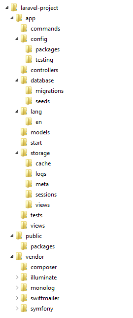

Laravel: PHP da gin zeer doet
An introduction to the Laravel Framework
Pieter Meyvaert
PHP Developer - Studio Emma
@pegasuz_
I
- am not a Laravel guru
- love exploring and learning new stuff
- wanted to share my findings with you
- like to build prototypes/small apps, fast
- do not speak west-vlaams
Talk Overview
- A brief history of Laravel
- Setup and config
- Artisan CLI
- Routing
- Views
- Database stuff
- Controllers
- Forms
- Authentication
- Other crazy stuff
A brief history of Laravel
It went from version 1 to version 4.2 in 3 years.
In the beginning there was...
- Taylor Otwell
- Very fast development
- Lots of changes, BC breaks
- Nobody likes that...
But then came
- Version 4.0
- From scratch, Depending on PHP 5.3 and above
- Collection of packages (Symfony, Swiftmailer, Monolog, Whoops), using composer, 100% covered with unittest
- Stable release schedule
Building a community
- Convention over configuration, but adjustable
- Easy, readable, expressive code
- Fast growth in popularity
- Great docs, tutorials, screencasts
- Cool kids syndrome
- Closed community
- Reinventing the wheel (Packalyst)
Popularity++
[ADD IMAGE OF GOOGLE TRENDS (ZF vs SF vs Laravel)]Setup and config
composer create-project laravel/laravel my-laravel-app
Setup a vagrant box using homestead (or phansible.com, or puphpet.com)
Folder structure

This changes in version 5!
Configuration
- Stored in app/config/*
- app.php
- auth.php
- cache.php
- database.php
- mail.php
- ...
- Default settings ensure quick-start (homestead)
- Inline documentation per setting
- Subfolders for different environments (local, testing, ... )
- Retrievable trough
Config::get('filename.configKey');
Bootstrapping
- app/start/*
- global.php : Logging (method, rotation) + Error handling
Artisan CLI
-
php artisan - Based on Symfony Console Component
- Helper commands
- migrate
- routes
- generate
- tinker
- Generator package (way/generators)
Routing
app/routes.php
- Closures
- Controllers
- Resource controllers (REST)
Routing using Closures
Restfully
Route::get('/', function() {
return 'Hello World';
});
Route::post('/', function() {
return 'Show this on POST';
});
Route::any('/', function() {
return 'Hello World';
});
Routing using parameters
Route::get('/post/{id}', function($id) {
return 'Show post ' . $id;
});
Optional parameters
Route::get('/post/{id?}', function($id = null) {
return 'Show post ' . $id;
});
Defaults
Route::get('/post/{id?}', function($id=123) {
return 'Show post ' . $id;
});
Route parameter constraints
Route::get('/post/{id}', function($id) {
return 'Show post ' . $id;
})->where('id', '[0-9]+');
Route naming
Route::get('/', ['as' => 'home', function() {
return 'Hello World!';
}]);
Use named routes
$url = URL::route('home');Route Filters
Limit access to a route using build-in or custom filters. Place them in app/filters.php
- auth
- auth.basic
- guest
- ...
Route::get('/', ['before' => 'auth', function() {
return 'Hello Authenticated User!';
}]);
Routing through controllers
Point a route to a specific action in a specific controller
Route::get('post/{id}', 'PostController@show');Route::get('post/{id}', 'Namespace\PostController@show');Define names
Route::get('home', array('uses' => 'HomeController@index',
'as' => 'home'));
Use routes to action
$url = URL::action('HomeController@index');Routing through resource controllers
Use (only) restfully routes on a controller
Route::resource('post', 'PostController');| Verb | Path | Action | Route Name |
|---|---|---|---|
| GET | /resource | index | resource.index |
| GET | /resource/create | create | resource.create |
| POST | /resource | store | resource.store |
| GET | /resource/{resource} | show | resource.show |
| GET | /resource/{resource}/edit | edit | resource.edit |
| PUT/PATCH | /resource/{resource} | update | resource.update |
| DELETE | /resource/{resource} | destroy | resource.destroy |
Views
Standard php (.php) or Blade template engine (.blade.php). Found in app/views
Hello, {{{ $name }}}.
@if($name) {
Hello, {{{ $name }}}
@else
Hello guest
@endif
@foreach($names as $name)
- {{{ $name }}}
@endforeach
Layouts
<html>
<body>
@yield('content')
</body>
</html>
@extends('layouts.master')
@section('content')
This is my body content.
@stop
Includes
Includes (partials) are exterior aware.
@include('view.name')Passing variables
@include('view.name', array('some'=>'data'))Database stuff
- Migrations
- Seeds
- Query Builder
- Eloquent
Migrations
Define your database structure and log changes.
Create new migration file
php artisan migrate:make migrationNameOther actions are:
- migrate
- rollback
- refresh
- reset
Migration file
class CreateRestaurantsTable extends Migration {
public function up() {
Schema::create('Restaurants', function(Blueprint $table) {
$table->increments('id');
$table->string('name');
$table->string('address');
$table->timestamps();
});
}
public function down() {
Schema::drop('Restaurants');
}
}
Seeds
Populate the database with (dummy) records.
php artisan db:seedPosible usages
- Create admin user
- Create default categories/pages
- Create test data
Query Builder
Perform queries on a database
Retrieving data
$users = DB::table('users')->get();$user = DB::table('users')->where('name', 'Pieter')->first();$users = DB::table('users')
->where('stars', '>', '15')
->orderBy('name', 'desc')
->get();Query Builder
Inserts
DB::table('users')->insert(
array('email' => 'pieter@studioemma.com', 'name' => 'Pieter')
);Updates
DB::table('users')
->where('id', 1)
->update(array('name' => 'Pieter Meyvaert'));Deletes
DB::table('users')->where('stars', '<', 100)->delete();Eloquent ORM
Laravel's implementation of a Active Record ORM system. Designed for a quick start, using some ground rules (which can be overridden). Create models in app/models.
class User extends Eloquent {}Ground rules
- Table name is lowercase plural form (User => users)
- Primary key (id)
- Timestamps (created_at, updated_at)
Eloquent functions
Selects
$users = User::all();$users = User::find(123);$users = User::where('name', 'LIKE', 'Pieter')->get();$users = User::where('stars', '>', '10')->latest()->take(5)->get();Eloquent functions
Insert
$user = new User;
$user->name = 'Pieter';
$user->save();
Update
$user = User::find(123);
$user->email = 'pieter@studioemma.com';
$user->save();
Delete
$user = User::find(123);
$user->delete();
User::destroy(123);User::where('stars', '<', 10)->delete();Soft deletes
On delete, mark database record of deletion (deleted_at), but do not actual delete it. Do not show these records in any queries.
Model class
class User extends Eloquent {
use SoftDeletingTrait;
protected $dates = ['deleted_at'];
}
Migration file
$table->softDeletes();Use deleted records in queries
$users = User::withTrashed()->where('name', 'LIKE', 'Pieter')->get();Restore a deleted record
$user->restore();Relationships
It can be hard to find the one you belong to.
Especially if there are multiple...
One To One
class User extends Eloquent {
public function phone()
{
return $this->hasOne('Phone');
}
}
class Phone extends Eloquent {
public function user()
{
return $this->belongsTo('User');
}
}
$phone = User::find(123)->phone;$user = Phone::find(321)->user;One To Many
class Talk extends Eloquent {
public function comments()
{
return $this->hasMany('Comment');
}
}
class Comment extends Eloquent {
public function talk()
{
return $this->belongsTo('Talk');
}
}
$comments = Talk::find(123)->comments;$comments = Talk::find(123)->comments()->where('title', 'LIKE', 'great')->first();$talk = Comment::find(321)->talk();Many to Many
class User extends Eloquent {
public function talks()
{
return $this->belongsToMany('Talk');
}
}
class Talk extends Eloquent {
public function users()
{
return $this->belongsToMany('User');
}
}
$talks = User::find(123)->talks$users = Talk::find(321)->usersCreate database table
php artisan generate:pivot users talksControllers
Can be found in app/controllers. They all extend BaseController
class UserController extends BaseController {
public function showProfile($id)
{
$user = User::find($id);
return View::make('user.profile', ['user' => $user]);
}
}
Forms
Forms are defined in the views
{{ Form::open(['action' => 'PostController@save')] }}
{{ Form::label('name', 'Your name') }}
{{ Form::text('name') }}
{{ Form::label('language','Your favorite language') }}
{{ Form::select('language', ['php', 'asp'], 'php') }}
{{ Form::submit('Submit!') }}
{{ Form::close() }}
Form model binding
Automagically fill the form based on a given model
{{ Form::model($user, ['action' => 'PostController@save')] }}
{{ Form::label('name', 'Your name') }}
{{ Form::text('name') }}
{{ Form::submit('Submit!') }}
{{ Form::close() }}
Form data in controllers
$name = Input::get('name');Default values
$name = Input::get('name', 'Pieter');Get all values
$input = Input::all();Check if value exists
Input::has('name')Authentication
Build-in authentication. Default uses the provided User model. No RBAC!
Login
if (Auth::attempt(['email' => $email, 'password' => $password]))
{
// Authenticated
}
Check authentication
Auth::check()Access logged in user
$user = Auth::user()Logout
Auth::logout();Remember our routes?
Route::get('/', ['before' => 'auth', function() {
return 'Hello Authenticated User!';
}]);
It all makes sense now!
Lost your password?
// Create migration
php artisan auth:reminders-table
// Run the migration
php artisan migrate
// Generate a controller for this
php artisan auth:reminders-controller
// Create a view ( reminders/password.remind.blade.php )
{{ Form::open(['action'=>'RemindersController@postRemind']) }}
{{ Form::label('email') }}
{{ Form::test('email') }}
{{ Form::submit('Submit!') }}
{{ Form:close() }}
Other crazy stuff
Sending Emails
Mail::send('emails.welcome', ['key' => 'value'], function($message)
{
$message->to('foo@example.com', 'John Smith')->subject('Welcome!');
});
Logging
// app/start/global.php
Log::useDailyFiles(storage_path().'/logs/logfile.log');
More crazy stuff
Build in queue support
Queue::push('SendEmail', array('message' => $message));
class SendEmail {
public function fire($job, $data) {}
}
Events
Event::listen('auth.login', function($user) {
$user->last_login = new DateTime;
$user->save();
});
$event = Event::fire('auth.login', [$user]);
Even more
Envoy Task Runner
@servers(['web' => '192.168.1.1'])
@task('deploy', ['on' => 'web'])
cd /var/www
git pull origin master
@endtask
envoy run deploy
Use the right tools
composer require barryvdh/laravel-ide-helper
- IDE helper support
- Blade support
- Laravel plugin
Thanks!
https://joind.in/11933